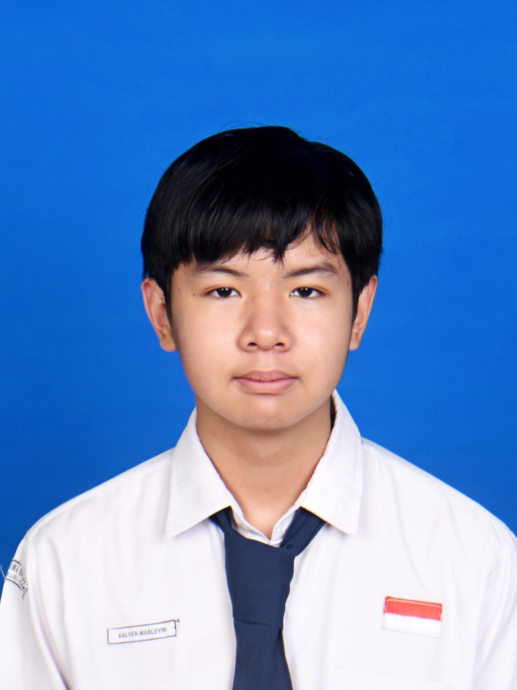

Kalven Mablevin
Siswa X TKJ 1 - SMK Kristen Immanuel Pontianak
Saya sedang belajar membuat website portofolio pribadi dari nol dengan panduan guru. Meskipun hasilnya masih jauh dari kata bagus, namun saya senang bereksperimen membuat tampilan website yang menarik.
Cita-cita saya menjadi Web Developer, maka dari itu saya memilih jurusan TKJ. Hobi saya adalah menontoh anime genre slice of life.